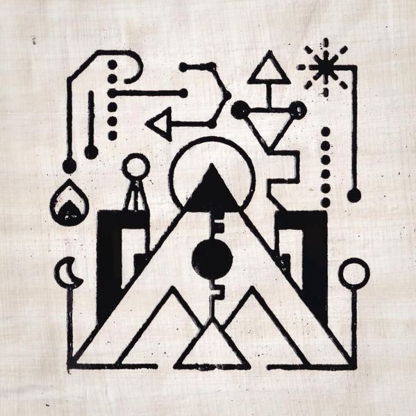

Civilisation


Civilisation é o quarto álbum de estúdio de Kero Kero Bonito, lançado em 2021. O álbum foi inspirado na linhagem art pop de artistas como Kate Bush, David Sylvian e Peter Gabriel.
Sua sonoridade foi feita com hardwares musicais antigos e empoeirados e usa escalas musicais antigas (escalas pentatônicas, repetição minimalista) e técnicas contemporâneas de composição para invocar uma atmosfera fora do tempo que abrange passado, presente e futuro simultaneamente.
As canções abordam temas como guerra psicológica (no funk polirrítmico místico de "Battle Lines"), mitologia antiga (no synth-pop enérgico e melancólico de "The Princess and the Clock") e a ressurreição dos mortos (em " Well Rested", o house psicodélico de 7 minutos de duração).